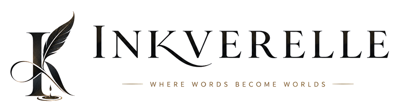
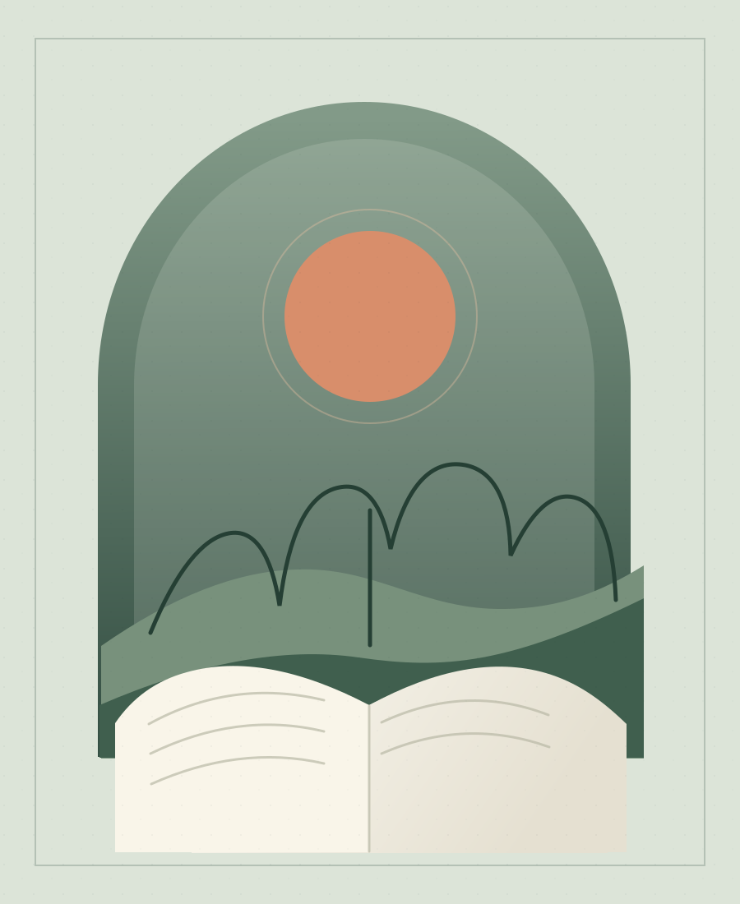

Featured · Reflection
The art of
paying attention
On noticing what the day leaves at your doorstep: light on the kitchen floor, the neighbor's lavender, a thought that finally found its way home.
Read it↗
INKVERELLE · POEMS, STORIES & REFLECTIONS
Poems, stories, and reflections from Inkverelle. Have a look around and stay for whatever speaks to you.
Browse the writing
POEMS, STORIES & REFLECTIONS VOL. 01Featured · Reflection
On noticing what the day leaves at your doorstep: light on the kitchen floor, the neighbor's lavender, a thought that finally found its way home.
Read it↗A POEM
BY
INKVERELLE
An original poem · 14 min read
GET IN TOUCH